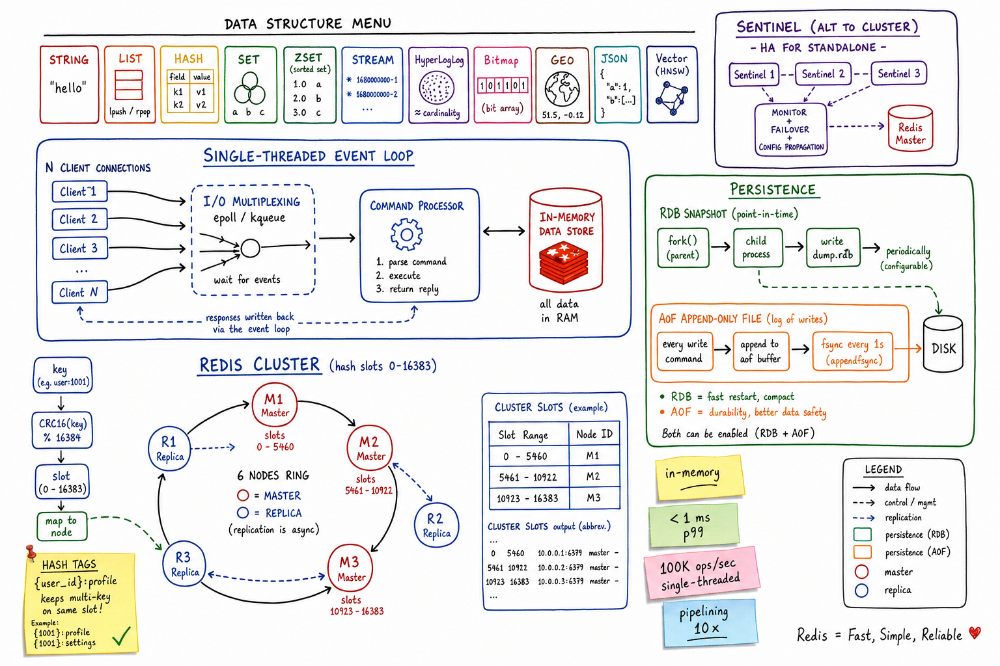
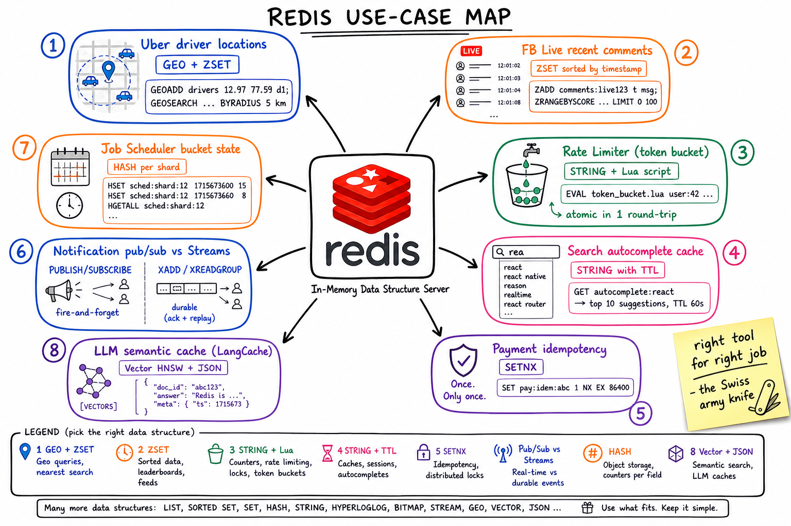

Redis // Deep Dive
In-memory data structure server. Cache, KV store, sorted-set leaderboard, pub/sub bus, durable stream, geospatial index, vector DB — one binary, eleven data structures, single-threaded core, sub-millisecond p99.

Whiteboard architecture: a single-threaded event loop multiplexes N client connections via epoll/kqueue; commands run serially against the in-memory store. Persistence runs alongside as RDB snapshots (forked child) and the AOF append-only log. Right: Redis Cluster with 16,384 hash slots distributed across master/replica nodes; {user_id} hash tags pin multi-key commands to a single slot. Sentinel is the HA option when not using Cluster.
01 — Identity
Redis is an in-memory data structure server. The contract is “give me a key, I'll give you a typed structure” — not just strings, but lists, hashes, sets, sorted sets, streams, bitmaps, hyperloglog, geo indexes, JSON documents, and vector indexes. Commands run in a single-threaded event loop, which is a feature, not a bug: it makes every command atomic relative to others without locks, while epoll keeps tens of thousands of connections cheap.
In a stack, Redis sits in front of a database as a cache, beside a service as a session/rate-limit/idempotency store, or as a special-purpose primary store for leaderboards, geospatial queries, real-time feeds, or vector similarity search. It is the Swiss army knife of latency-sensitive code paths.
Sub-millisecond reads, 100K+ ops/sec from a single core, every data structure you wished your DB had inline. The cost is that “working set” has to fit in RAM.
01a — Core Concepts
| Term | Definition | Notes |
|---|---|---|
| Key | UTF-8 binary-safe string, max 512 MB (use short names). | Namespace with : (e.g. user:42:session). |
| Value type | STRING, LIST, HASH, SET, ZSET, STREAM, HLL, BITMAP, GEO, JSON, VECTOR. | One value per key. Commands are type-specific. |
| Expiration / TTL | Per-key time-to-live in seconds or ms. | EXPIRE key 60; lazy + active deletion. |
| Eviction policy | What to drop when maxmemory is hit. | allkeys-lru, volatile-lru, allkeys-lfu, noeviction, ... |
| RDB | Point-in-time binary snapshot of the dataset. | Compact, fast restart; forked child writes it. |
| AOF | Append-only log of every write command. | Better durability; rewritten periodically to shrink. |
| Pipelining | Client sends N commands without waiting for replies, then reads them. | Pure RTT optimisation. NOT atomic. |
| MULTI / EXEC | Server-side queued transaction; all commands run consecutively. | No rollback on logic errors; serial execution = atomic. |
| Lua / EVAL | Script runs server-side atomically end-to-end. | Best for read-modify-write in one round-trip. |
| Cluster | Sharding by 16,384 hash slots across N master nodes. | Multi-key ops must share a slot — use {hashtag}. |
| Sentinel | HA for non-Cluster Redis: monitors master, fails over to replica. | Quorum-based; clients learn current master via Sentinel. |
| Replica | Async copy of a master's dataset for reads / failover. | Can be configured semi-sync via WAIT. |
01b — API / Wire Surface
The everyday commands
# Strings + KV
SET user:42:name "Alice" EX 3600
GET user:42:name
INCR page:home:views # atomic counter
# Hashes (small structured object)
HSET user:42 name "Alice" age 30 plan "pro"
HGET user:42 plan
HGETALL user:42
# Sets / Sorted Sets
SADD tag:redis 42 73 99
ZADD leaderboard 1500 "alice" 2300 "bob"
ZRANGE leaderboard 0 9 REV WITHSCORES # top 10
ZRANGEBYSCORE leaderboard 1000 2000
# Streams (durable log, consumer groups)
XADD events * type "click" user 42
XGROUP CREATE events analytics $ MKSTREAM
XREADGROUP GROUP analytics worker-1 COUNT 100 BLOCK 5000 STREAMS events >
XACK events analytics <id>
# Atomic scripts
EVAL "return redis.call('SET', KEYS[1], ARGV[1], 'NX')" 1 lock:foo "owner-1"
# Pub/sub (fire-and-forget)
SUBSCRIBE channel:news
PUBLISH channel:news "hello"
# RediSearch / Query Engine
FT.CREATE idx:products ON HASH PREFIX 1 product: SCHEMA name TEXT price NUMERIC
FT.SEARCH idx:products "@price:[10 50] @name:redis*" LIMIT 0 10
# Vector (RedisVL)
FT.CREATE idx:docs ON HASH SCHEMA emb VECTOR HNSW 6 TYPE FLOAT32 DIM 768 DISTANCE_METRIC COSINE
FT.SEARCH idx:docs "*=>[KNN 5 @emb $vec]" PARAMS 2 vec <bytes> DIALECT 2
Most interview gold lives in three commands:SETNX/SET ... NX EX(idempotency keys, distributed locks),ZADD/ZRANGEBYSCORE(sorted feeds, rate limiters, leaderboards), andEVAL(any read-modify-write that must be atomic).
02 — When To Use / When NOT
| Use Redis when… | Avoid Redis when… |
|---|---|
| Hot cache in front of slow DB, sub-ms reads | Working set won't fit in RAM and you can't shard |
| You need a sorted leaderboard, geo index, recent feed | Strong durability with zero loss tolerance — even AOF has windows |
| Rate limiting, distributed locks, idempotency keys | Complex transactions / joins / SQL queries |
| Real-time pub/sub, fire-and-forget signals | Long-lived analytical queries (use OLAP) |
| Durable in-memory stream (XADD/XREADGROUP) | Massive throughput-per-shard (single-threaded core caps ~100K ops/sec/node) |
| Vector similarity search next to your cache | Heavy multi-key transactions across shards in Cluster mode |
03 — Architecture (Internals)
Single-threaded core + I/O threads
Redis runs commands on a single thread. The event loop uses epoll/kqueue to multiplex thousands of TCP connections. For each ready connection, it parses the RESP protocol, dispatches the command, mutates the in-memory dataset, writes the reply to the socket buffer, and moves on. Because only one command executes at a time, there are no locks — every Redis command is atomic relative to every other.
Modern Redis (6.0+) added optional I/O threads that parallelise just socket read/write parsing; command execution stays single-threaded.
Memory layout
Top-level dict (hash table)
key -> robj { type, encoding, refcount, *ptr }
│
┌────────────────────┼────────────────────┐
▼ ▼ ▼
STRING (sds) HASH (listpack ZSET (listpack
or hashtable) or skiplist+dict)
Each type picks a compact encoding (listpack, intset, ziplist-like) for small values and switches to a bigger structure when it grows past thresholds. This is why a tiny HASH costs ≈ one allocation and bulk-loading huge ones balloons memory.
Replication path
- Replica connects, sends
PSYNC <replid> <offset>. - If the offset is in the master's in-memory replication backlog → partial resync (stream missing commands).
- Otherwise → full resync: master forks, snapshots RDB, ships it, then streams write commands.
- Replication is async by default;
WAIT numreplicas timeoutgives weak semi-sync.
04 — Data Structures: Right Tool For The Job
| Structure | Use it for | Why |
|---|---|---|
| STRING | Cached blob/JSON, counters (INCR), idempotency keys (SETNX), distributed locks | Atomic INCR/DECR; binary-safe up to 512 MB |
| HASH | Per-object fields you mutate individually (user profile, shopping cart) | Memory-efficient for small objects (listpack encoding); per-field expiration in 7.4+ |
| LIST | Queues (LPUSH/BRPOP), bounded recent items (LTRIM) | O(1) push/pop ends; blocking ops for producer/consumer patterns |
| SET | Membership, tag systems, deduplication, set algebra | O(1) add/remove/exists; intersect/union for “mutual followers”-style queries |
| ZSET (Sorted Set) | Leaderboards, time-ordered feeds, priority queues, rate limiters | Skiplist + hash; O(log N) add, O(log N + M) range; score = your sort key |
| STREAM | Durable event log with consumer groups, ack semantics, replay | Kafka-shaped within a single Redis; XADD/XREADGROUP/XACK |
| HyperLogLog | Approximate unique counts (DAU, distinct IPs) | 12 KB fixed for ~0.81% error on billions of items |
| Bitmap | Per-user feature flags, daily active flags, bloom-ish presence | SETBIT/GETBIT; BITCOUNT for population |
| GEO | Driver locations, nearest-restaurant search | Geohash inside a ZSET; GEOSEARCH BYRADIUS / BYBOX |
| JSON | Nested documents with path queries / partial updates | JSON.SET/JSON.GET/JSON.ARRAPPEND — modify subtrees in place |
| VECTOR | Embedding similarity search, RAG retrieval | HNSW or FLAT index; combine with text/numeric filters (hybrid) |

Zoom-in: which data structure to reach for, mapped to real systems — GEO+ZSET for Uber driver locations, ZSET for FB Live recent comments, STRING+Lua for rate limiting, SETNX for payment idempotency, pub/sub vs Streams for notifications, HASH per shard for Job Scheduler bucket state, Vector+JSON for LLM semantic cache.
05 — Persistence: RDB vs AOF
| RDB (snapshot) | AOF (append-only file) | |
|---|---|---|
| What | Binary dump of the whole dataset | Log of every write command in RESP format |
| Trigger | Time + change thresholds (save 60 10000); BGSAVE | Every write; fsync per appendfsync setting |
| How | fork() child process, COW snapshot of pages, write dump.rdb | Append to file; rewrite (BGREWRITEAOF) compacts |
| Restart speed | Fast — load one compact file | Slower — replay log |
| Worst-case loss | Between snapshots (could be minutes) | 1 second (everysec, default); 0 (always); seconds (no) |
| Use | Fast disaster recovery, periodic backups | Tighter durability for primary store use cases |
The recommended config
Both enabled. RDB for fast restarts and easy backups; AOF for the ≤ 1s loss guarantee. On restart, Redis prefers AOF if present. Trade-off: extra disk I/O and memory during AOF rewrite (forked child).
fork()on a 50 GB Redis can stall for hundreds of ms (huge page table copy). Use Transparent Huge Pages OFF and watchlatest_fork_usec. This is the most common “Redis is fast except sometimes” surprise.
06 — Eviction Policies
When maxmemory is hit and a write arrives, Redis must choose what to drop. The policy you pick is mostly a function of what Redis is being used as.
| Policy | Drops | Use |
|---|---|---|
noeviction | Nothing — writes return error | Redis as a primary store; you'd rather fail than lose data |
allkeys-lru | Approximate LRU across all keys | Pure cache where everything is fair game |
allkeys-lfu | Least-frequently-used across all keys | Cache with skewed access (small set of hot keys) |
volatile-lru / volatile-lfu | Same, but only among keys with TTL | Mixed workload: persistent data + cached data with TTLs |
volatile-ttl | Key with shortest remaining TTL | You set sensible TTLs and want them honoured first |
allkeys-random / volatile-random | Random key | Rare — only when you genuinely don't know access patterns |
Redis samples N keys (default 5) per eviction round and picks the best; not true LRU/LFU but very close at this scale.
07 — Atomicity: Lua vs MULTI/EXEC vs Pipelining
| Pipelining | MULTI/EXEC | Lua / EVAL | |
|---|---|---|---|
| Round trips | 1 (batch) | 1 (batch) | 1 |
| Atomic? | NO — commands interleave with others | YES — queued then run consecutively | YES — runs end-to-end without yielding |
| Conditional logic | No | WATCH for optimistic locking | Full Lua: if/then, loops, computation |
| Use | Bulk loads, “just send 10K SETs faster” | Group of writes that must happen together | Read-modify-write logic, token-bucket rate limit |
Worked example: token-bucket rate limit in one round trip
-- token_bucket.lua: KEYS[1] = bucket key, ARGV = capacity, refill_rate, now
local bucket = redis.call('HMGET', KEYS[1], 'tokens', 'last')
local tokens = tonumber(bucket[1]) or tonumber(ARGV[1])
local last = tonumber(bucket[2]) or tonumber(ARGV[3])
local refill = (tonumber(ARGV[3]) - last) * tonumber(ARGV[2])
tokens = math.min(tonumber(ARGV[1]), tokens + refill)
if tokens < 1 then return 0 end
tokens = tokens - 1
redis.call('HMSET', KEYS[1], 'tokens', tokens, 'last', ARGV[3])
redis.call('EXPIRE', KEYS[1], 60)
return 1
One round-trip, atomic, exact — no race. The same logic in client-side code with WATCH/MULTI is 3–4 round trips and a retry loop.
Long Lua scripts block the single thread. Keep them short (microseconds). Beyond ~5ms you're hurting other clients.
08 — Redis Cluster & Sharding
Cluster mode shards data across master nodes using 16,384 hash slots:
slot = CRC16(key) % 16384 key “user:42:cart” -> slot 7340 -> lives on Master B
- Each master owns a contiguous (or arbitrary) range of slots; each has 1+ replicas.
- Clients are cluster-aware: on a
MOVEDredirect, they update their slot → node map and retry. - Resharding migrates slots one-at-a-time between masters — live, but extra hops via
ASKredirect during migration. - Failover: Sentinel-like quorum among masters promotes a replica when a master is unreachable.
The multi-key gotcha & hash tags
Cluster only allows multi-key commands (MSET, EVAL with multiple keys, SUNION, transactions) when all keys hash to the same slot. Solution: hash tags — only the substring inside {...} is hashed.
{user:42}:profile ─┐
{user:42}:cart │ all on the same slot/node
{user:42}:sessions ─┘
vs.
user:42:profile → slot A
user:42:cart → slot B ✗ CROSSSLOT error on multi-key op
Pick your hash tag (typically the tenant or user ID) so co-accessed keys stay together.
09 — Pub/Sub vs Streams
Pub/Sub (PUBLISH/SUBSCRIBE) | Streams (XADD/XREADGROUP) | |
|---|---|---|
| Durability | None — messages dropped if no subscriber | Persisted to the data set; consumed via offset |
| Delivery | Fire-and-forget, broadcast to all current subscribers | At-least-once with explicit XACK; pending entries list (PEL) |
| Consumer groups | No | Yes — load balance across consumers (XGROUP) |
| Replay | No | Yes — read by ID from start, or any point |
| Use | Real-time notifications, cache invalidation, leaderboards push | Durable event log, task queue with retries, audit feed |
Use Pub/Sub when missing a message is OK and latency must be minimal. Use Streams when you need Kafka-lite semantics inside Redis (durability, groups, replay, ack/claim/idle handling).
10 — Vector Search & Semantic Cache
Redis Query Engine (RediSearch) + RedisVL turn Redis into a vector database without leaving the cache tier. You define an index over HASH or JSON keys with a VECTOR field, then run KNN queries.
FT.CREATE idx:docs ON HASH PREFIX 1 doc:
SCHEMA emb VECTOR HNSW 6 TYPE FLOAT32 DIM 768 DISTANCE_METRIC COSINE
tenant TAG title TEXT
FT.SEARCH idx:docs "@tenant:{acme} =>[KNN 5 @emb $query AS score]"
PARAMS 2 query <bytes> SORTBY score DIALECT 2
- HNSW vs FLAT: HNSW for > ~100K vectors with sub-ms latency at recall > 0.9; FLAT for exact KNN at small scale.
- Hybrid search: combine vector similarity with TAG/NUMERIC/TEXT filters in one query — usually beats vector-only for relevance.
- LangCache / semantic cache: cache LLM responses by embedding similarity of the question. New question → if any cached question has cosine > 0.92, return that answer. Dramatically cuts model spend on repeated/paraphrased queries.
11 — Operational Concerns
Sizing
- RAM ≈ working_set × (1 + overhead 25-40%) + replication backlog + COW headroom for fork.
- One Redis process ≈ 100K ops/sec ceiling per core. Need more? Shard with Cluster.
- Connection cost: ~10 KB per client — use a connection pool, don't open one per request.
Metrics that matter
| Metric | What it tells you |
|---|---|
| used_memory / maxmemory | How close to eviction (or OOM) |
| evicted_keys | Cache pressure; if > 0 the working set exceeds RAM |
| keyspace_hits / keyspace_misses | Cache hit ratio |
| latest_fork_usec | Stall during RDB/AOF rewrite; large = THP / huge dataset |
| connected_clients / blocked_clients | Connection pool health |
| slowlog | Commands > 10ms; usually a giant KEYS * or SMEMBERS on a huge set |
Classic failures
KEYS *in prod → blocks the single thread for seconds; the whole DB stalls. UseSCAN.- Big keys (multi-MB hashes, million-element ZSETs) make every command on them slow. Find with
redis-cli --bigkeys; split. - Hot key (everyone hitting
config:flags) → CPU pegged on one shard. Add a client-side cache (CLIENT TRACKINGRESP3) or replica reads. - Async replication lag + failover → data loss on the promoted replica. Use
WAITor accept it's a cache, not a DB. - Fork stall on RDB — see above; disable THP, monitor
latest_fork_usec.
12 — Usage Patterns (Cross-Links)
- Uber driver locations — GEO commands over a ZSET; each ping is an overwrite of the same key, GEOSEARCH BYRADIUS finds nearby drivers in O(log N + M).
- FB Live recent comments — per-stream ZSET keyed by timestamp;
ZADDon send,ZRANGEBYSCOREon join +ZREMRANGEBYRANKto cap. - Rate Limiter — token bucket implemented in a single Lua script per key; one round-trip, exact.
- Search autocomplete — STRING cache per prefix with TTL 60s, fronting a heavier trie service.
- Payment idempotency —
SET pay:idem:<key> status NX EX 86400guarantees one and only one submit per client retry window. - Notification system — Pub/Sub for real-time push, Streams for the durable per-channel delivery log.
- Job Scheduler — per-shard HASH stores in-flight bucket state; SETNX-based leader leases per shard.
13 — Alternatives
| System | Pick when… | Trade-off |
|---|---|---|
| Memcached | You only need a flat KV cache with LRU; want multi-threaded throughput per node | No data structures, no persistence, no replication, no pub/sub |
| Hazelcast / Apache Ignite | Java-native; embedded near-cache, distributed locks, compute over data | Heavier JVM ops; fewer data structures than Redis |
| AWS ElastiCache (Redis-compatible) | Managed Redis with auto-failover, snapshots, multi-AZ | Less knob control; cost |
| DragonflyDB / KeyDB | You want Redis API but multi-threaded execution per node | Newer ecosystem; some module gaps |
| Redpanda / Kafka | Durable event log at scale, not just a Redis Stream | Heavier ops; not a cache |
| Pinecone / Weaviate / Qdrant | Vector-only DB with rich filtering, billions of vectors | Separate system; pay for what you don't use; latency vs Redis |
14 — Interview Q&A
How is Redis so fast on a single thread?
Which eviction policy should I choose for a cache?
allkeys-lru if all keys are cache, volatile-lru if you mix permanent data with TTL'd cache, allkeys-lfu when the access distribution is skewed (a hot 10% gets 90% of traffic) because LFU keeps the hotset better than LRU under bursty access. For a primary-store Redis, pick noeviction — you'd rather fail writes than silently lose data.RDB or AOF — which do you use in production?
appendfsync everysec bounds worst-case loss to ~1 second. On restart Redis prefers AOF. Watch out for fork stalls on big datasets — disable Transparent Huge Pages and keep an eye on latest_fork_usec.How do you implement a distributed lock with Redis?
SET lock:foo <random-id> NX EX 30. The random ID is the “fencing token” you check on release with a Lua script that does GET + DEL only if the value matches yours — otherwise you'd delete someone else's lock after a TTL expiry. For stronger guarantees across multiple independent masters, the Redlock algorithm acquires the lock on N/2+1 nodes; it's debated, so most teams just accept “single-master + short TTL + fencing token”.What is a hash tag and why does Cluster need them?
CRC16(key) % 16384. Multi-key commands (MSET, SUNION, EVAL with multiple keys, transactions) require all keys to hit the same slot — otherwise you get CROSSSLOT. The hash tag is the substring inside {...} in a key name; only that substring is hashed, so {user:42}:profile and {user:42}:cart land on the same node. Pick a tag that groups co-accessed keys (usually the tenant or user id).When would you choose Streams over Pub/Sub?
XACK for at-least-once, track a pending-entries list per consumer for retries, and let you read from any historical ID. The classic split: Pub/Sub for “cache invalidation” signals, Streams for durable task queues.How do you rate-limit without races?
EVAL call performs all reads, decisions, writes and TTL refresh atomically — no race between “read counter” and “increment counter”. Keep the script short (microseconds) because it blocks the single thread.How do you handle a hot key?
--hotkeys or per-slot CPU. Options: (1) client-side cache via CLIENT TRACKING (RESP3) so most reads never reach Redis; (2) read replicas with READONLY reads spread the load; (3) shard the key (e.g. config:flags:{shard0..N}) and read a random shard; (4) for write-heavy hot keys, accept the bottleneck and put the value in process memory with a short TTL and async refresh.What's your worst-case data-loss window?
appendfsync everysec: up to ~1s of writes on a crash. With async replication: anything not yet shipped to a replica is lost on failover (can be many ms during load). With noeviction off and a sudden working-set spike: keys evicted regardless of TTL. Mitigations: WAIT for semi-sync, appendfsync always for stricter durability (slow), Cluster + replica per master, and accepting that Redis is best-effort durable — if you need ACID, layer it with a DB.What does pipelining buy you and when does it hurt?
How would you front an LLM with Redis as a semantic cache?
HSET with the embedding for next time, optionally with TTL. Hybrid filter on tenant/user/route to avoid leaking answers across contexts. RedisVL packages this as a LangCache primitive.What's the operational gotcha you'd warn a new team about?
KEYS * — it blocks the single thread; use SCAN. (2) Disable Transparent Huge Pages and watch fork latency; a 30 GB Redis can stall hundreds of ms on RDB snapshot, which looks like “Redis paused”. (3) Use a connection pool. A common “why is Redis slow” turns out to be 10K processes each opening one connection per request.